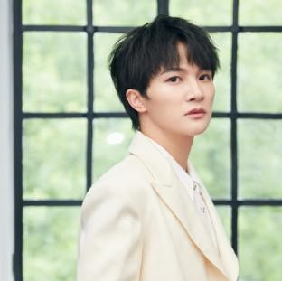
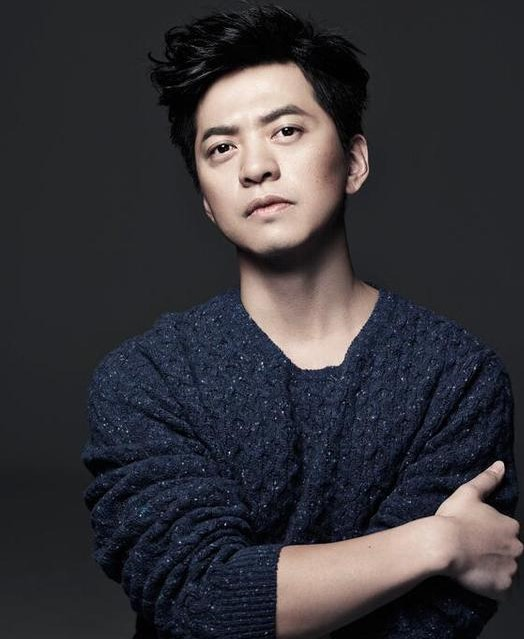
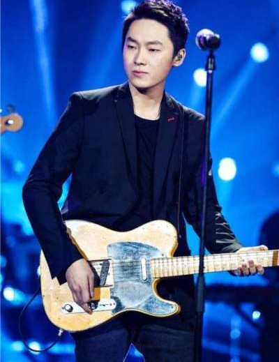
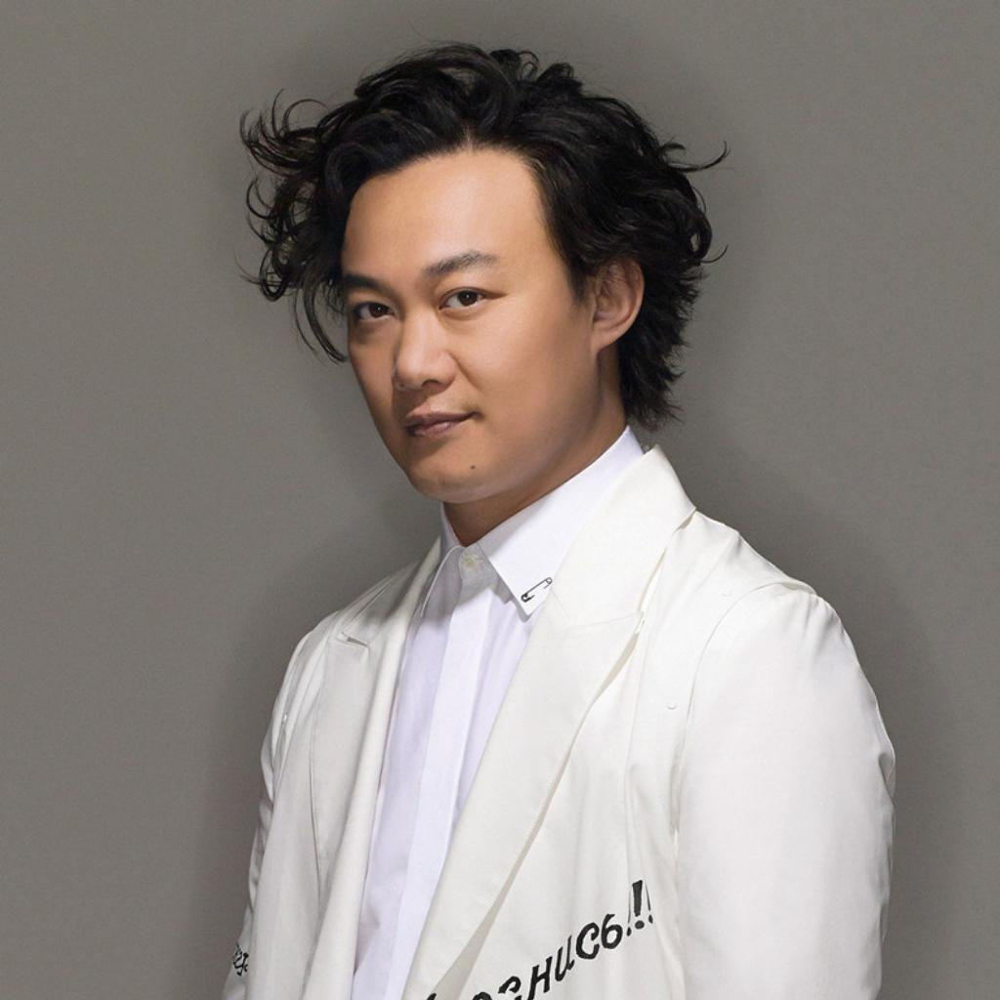

歌 手 简 介
-
周杰伦（Jay Chou，1979年1月18日-）[1]，出生于中国台湾新北市，毕业于淡江中学，中国台湾男歌手、演员、导演，亚洲流行乐坛最具革命性的创作歌手。 2000年，被吴宗宪发掘并推出首张专辑《Jay》，被大众熟知。2003年，成为美国《时代周刊》封面人物；同年，发行歌曲《东风破》，并荣获华语音乐传媒大赏评为最佳作曲人。2005年，首次主演电影《头文字D》，获得金马奖、金像奖最佳新人奖。[2]2007年，自编自导的文艺片《不能说的秘密》获得金马奖年度台湾杰出电影奖。
-

周深（Charlie，1992年9月29日-），出生于湖南邵阳，长于贵州贵阳，毕业于乌克兰利沃夫国立音乐学院，中国内地男歌手。 2010年，进入网络语音平台YY唱歌，后成为2080天籁歌手。2014年，参加第三季《中国好声音》受到关注。2016年，为动画电影《大鱼海棠》献唱印象曲《大鱼》一炮而红。2018年，受邀为奥斯卡最佳电影《水形物语》献唱同名中文推广曲《水形物语》，同年参加《声入人心》大受好评。2020年7月，成立个人工作室。
-
张杰（外文名：Jason Zhang，1982年12月20日-），出生于四川成都，毕业于四川师范大学，中国内地男歌手。 2004年参加歌唱类选秀《我型我秀》，获得全国总冠军并出道。[1]2007年参加歌唱类选秀《快乐男声》，获得总决赛第四名；随后发行的EP《最美的太阳》拿下亚马逊年度唱片销量冠军[2]。2008年发行专辑《明天过后》，凭借该专辑获得北京流行音乐典礼11项提名。2010年发行专辑《这，就是爱》；同年获得韩国MAMA亚洲最佳歌手奖。
-
徐佳莹（Lala Hsu，1984年12月20日-），生于中国台湾台中市，毕业于中国台湾中台科技大学，中国台湾女歌手、词曲创作人。 2008年，徐佳莹因获得第三届《超级星光大道》比赛冠军而正式踏入歌坛[1]。2009年，发行个人首张专辑《徐佳莹LaLa首张创作专辑》；同年，获得新加坡金曲奖最佳新人奖。2010年，徐佳莹凭借《徐佳莹LaLa首张创作专辑》获得第10届华语音乐传媒大奖最佳国语女新人和最佳作曲人[2]；同年，她发行了第二张专辑《极限》；并举办了首场个人售票演唱会。
-

李健（1974年9月23日-），出生于黑龙江哈尔滨，毕业于清华大学，中国内地流行乐男歌手、音乐制作人。 他于2001年，与卢庚戌正式成立“水木年华”组合，发行了第一张专辑《水木年华一生有你》。2002年退出组合后，推出个人专辑《似水流年》《音乐傲骨》等。2011年获得东方风云榜最佳男歌手奖。2020年8月21日，做为导师参加综艺节目《2020中国好声音》。2021年发行单曲《人群中的人》《一路花香一路唱》。
-

李荣浩（外文名：Youngho Lee，1985年7月11日-），出生于安徽蚌埠，中国内地男歌手、音乐制作人[1]。 2005年，签约日本艾回唱片，成为创作艺人。2010年，发行首张个人音乐EP《小黄》[2]。2013年，发行个人首张音乐专辑《模特》正式以歌手身份出道，并凭借这张专辑提名第25界金曲奖五项大奖并获得最佳新人奖[3]。2014年，发行专辑《李荣浩》。2015年，以踢馆歌手身份参加《我是歌手第三季》。2016年，发行第三张专辑《有理想》。
-

杨宗纬（Aska Yang，1978年4月4日-），出生于中国台湾省桃园县，毕业于国立彰化师范大学，中国台湾男歌手。 2007年，参加第一届《超级星光大道》歌唱选秀节目，并获选为第一届“人气王”[1]。2008年，发行首张个人专辑《鸽子》[2]。2011年，加盟环球音乐，发行由李宗盛制作的专辑《原色》[3]。2013年，参赛湖南卫视歌唱节目《我是歌手》获得第三名[4]。2009年，凭借单曲《洋葱》走红内地。2018年，演唱影视OST《凉凉》，获第25届《东方风云榜》音乐盛典十大金曲奖。
-
.jpg)
林俊杰（JJ Lin，1981年3月27日-），出生于新加坡，毕业于St Andrews Junior College，新加坡男歌手、词曲作家、音乐制作人[1]。 1999年，与海蝶音乐签约，从此开启了音乐道路。2003年，发行首张全创作专辑《乐行者》，并于次年凭借该专辑获得第15届台湾金曲奖最佳新人奖[2][3]。2004年，凭借专辑《第二天堂》中的主打歌《江南》获得广泛关注。2006年，参加中国中央电视台春节联欢晚会献唱《一千年以后》，并成为当晚最受观众喜爱的明星。
-

梁博（Bruce，1991年3月25日-），出生于吉林长春，毕业于吉林艺术学院，中国内地男歌手、“集结号”乐队主唱。 2012年，参加《中国好声音》获年度总冠军[1]；12月29日，凭借《因为》获第20届中国歌曲排行榜年度最受欢迎新人奖。2013年9月29日，重新回归乐坛。2014年4月24日，发行首张创作专辑《梁博》[2]。2015年3月25日，获QQ音乐2015年度盛典-年度最佳唱作专辑奖[3]；4月13日，获第15届音乐风云榜“最受欢迎唱作人”奖。
-
莫文蔚（Karen Joy Morris，1970年6月2日-），出生于中国香港[1]，毕业于英国伦敦大学皇家霍洛威学院，英国籍女歌手、演员。 1993年发行首张粤语专辑《Karen》进入娱乐圈[2]，1995年主演电影《大话西游》获得关注，1997年赴台湾发展，并在台湾发行首张普通话专辑《做自己》[3]，2003年获得第5届CCTV-MTV音乐盛典香港地区年度最佳女歌手奖，2008年获得韩国第五届亚洲音乐节亚洲最佳女歌手奖；同年凭借专辑《拉活》获得第19届台湾金曲奖最佳国语专辑奖。
-
薛之谦（Joker，1983年7月17日-），出生于上海市，毕业于格里昂酒店管理学院，中国内地男歌手、主持人、演员。 2005年，因参加选秀节目《我型我秀》而正式出道[1]。2006年，发行首张同名专辑《薛之谦》[2]，随后凭借歌曲《认真的雪》获得广泛关注。2007年，凭借专辑《你过得好吗》获得MusicRadio中国TOP排行榜内地年度最受欢迎男歌手奖。2008年，发行专辑《深深爱过你》；同年，在上海举行个人首场演唱会“谦年传说”。
-

陈奕迅（Eason Chan，1974年7月27日-），出生于中国香港，毕业于英国金斯顿大学，中国香港流行乐男歌手、演员。 1995年参加第14届新秀歌唱大赛并获得冠军，同年正式出道[1]。1996年发行个人首张专辑《陈奕迅》[2]。1997年主演个人首部电影《旺角大家姐》。1998年凭借歌曲《天下无双》在乐坛获得关注[3]。2000年发行的歌曲《K歌之王》奠定其在歌坛的地位。2003年发行个人首张概念专辑《黑·白·灰》，专辑中的歌曲《十年》获得第4届音乐风云榜十大金曲奖。